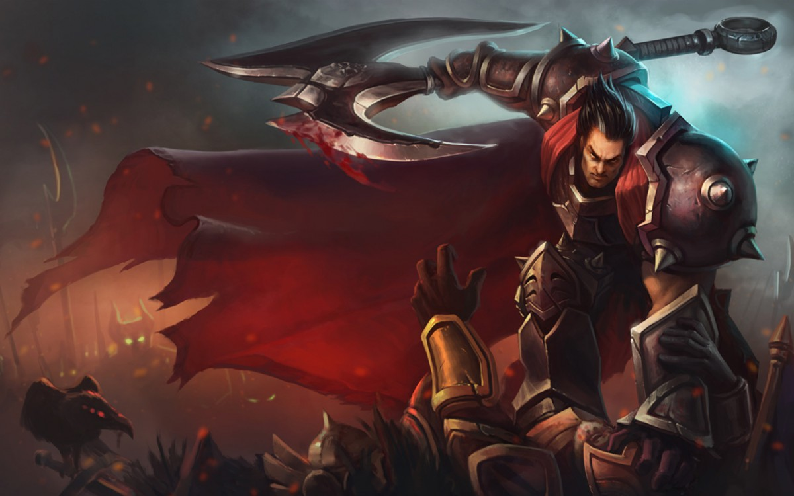

Darius

There is no greater symbol of Noxian might than Darius, the nation’s most feared and battle-hardened leader. Rising from humble origins to become the Hand of Noxus, he cleaves through the empire’s enemies—many of them Noxians themselves. Knowing that he never doubts his cause is just, and never hesitates once his axe is raised, those who stand against the commander of the Trifarian Legion can expect no mercy.